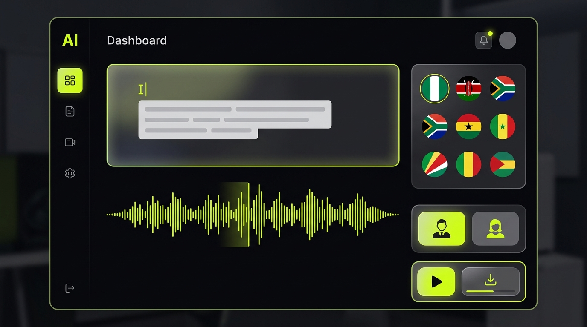

AfriVoice génère des voix-off IA avec les accents réels de 19 pays d'Afrique. Podcasts, publicités, vidéos — en un clic, votre contenu parle à l'Afrique.
Regardez comment créer une voix-off africaine authentique en moins de 2 minutes.
Écoutez des exemples réels de voix-off générées par les utilisateurs d'AfriVoice au Sénégal, au Gabon et en Côte d'Ivoire.
« Voix-off générée pour une campagne publicitaire nationale avec accent ivoirien authentique. »
« Narration immersive et conte littéraire généré avec une voix wolof naturelle et expressive. »
« Récit documentaire et institutionnel haute définition avec intonation gabonaise claire. »
Un processus simple, rapide et puissant. AfriVoice transforme n'importe quel texte en voix-off professionnelle avec l'accent africain de votre choix.
Tapez ou collez votre texte dans le studio. Scripts, slogans, narrations — tout est possible.
Sélectionnez parmi 19 pays d'Afrique. Chaque voix porte les nuances authentiques de sa région.
L'IA génère votre voix en qualité studio HD. Téléchargez en WAV et utilisez immédiatement.
Des outils professionnels conçus pour les créateurs de contenu, agences et entreprises du continent.
Des voix IA conçues avec les inflexions, rythmes et tonalités propres à chaque région d'Afrique. Pas des voix génériques — de vraies voix du continent.
Du Gabon au Kenya, du Sénégal à l'Afrique du Sud — choisissez parmi une bibliothèque d'accents africains en constante évolution.
Moteur AI v2.5 avec humanisation phonétique, expressions locales et contrôle d'intensité d'accent pour des résultats ultra-réalistes.
Qualité audio 24kHz PCM professionnelle. Mastering HD automatique et export WAV instantané. Prêt pour la radio et la TV.
Générez 3 variantes de voix simultanément avec des tonalités et émotions différentes. Choisissez celle qui correspond le mieux.
Utilisez AfriVoice directement depuis votre navigateur, sur mobile ou desktop. Aucune installation requise, accès instantané.
Installable sur mobile et desktop, AfriVoice est conçu pour les créateurs qui veulent produire rapidement du contenu vocal africain de qualité.

"AfriVoice a transformé notre production de contenus. Les voix sont incroyablement naturelles et nos auditeurs au Cameroun reconnaissent immédiatement l'accent."
"En tant que créatrice TikTok, j'ai enfin une voix-off qui me ressemble. L'accent ivoirien est tellement réaliste, mes abonnés adorent."
"Notre agence utilise AfriVoice pour toutes les campagnes publicitaires africaines. La qualité HD est au niveau des studios professionnels. Un gain de temps énorme."
Chaque forfait inclut un quota mensuel de minutes et des fonctionnalités exclusives adaptées à votre cadence de production.
💳 Paiement sécurisé via carte bancaire ou Mobile Money (MTN MoMo, Orange Money, Wave, Airtel)
Tout ce que vous devez savoir pour créer des voix-off africaines d'exception avec AfriVoice.
AfriVoice utilise des modèles de synthèse vocale IA de dernière génération, spécifiquement entraînés sur la phonétique, les intonations et les accents régionaux de 19 pays d'Afrique (Côte d'Ivoire, Sénégal, Cameroun, Nigéria, Kenya, etc.) pour offrir une voix authentique et naturelle.
Absolument ! Tous les fichiers audio générés avec les forfaits Creator et Pro incluent des droits d'exploitation commerciale complète (YouTube, TikTok, Radio, Télévision, Spots publicitaires, Podcasts).
Nous acceptons les moyens de paiement locaux et internationaux les plus populaires : Mobile Money (MTN MoMo, Orange Money, Wave, Airtel Money) ainsi que les cartes bancaires Visa et Mastercard.
Vous pouvez télécharger vos pistes audio en haute qualité MP3 (320 kbps) ou en format professionnel non compressé WAV (24kHz Studio PCM), immédiatement utilisables dans tous vos logiciels de montage (CapCut, Premiere Pro, DaVinci, Audition).
Oui ! Le Studio AfriVoice inclut l'option "Humanisation Phonétique IA" et permet d'intégrer des expressions locales (nouchi, argot urbain, intonations culturelles) pour adapter parfaitement la voix à votre public cible.
Rejoignez les créateurs qui donnent vie à leurs idées avec les voix du continent.
Accès immédiat · Créez vos voix-off en quelques clics